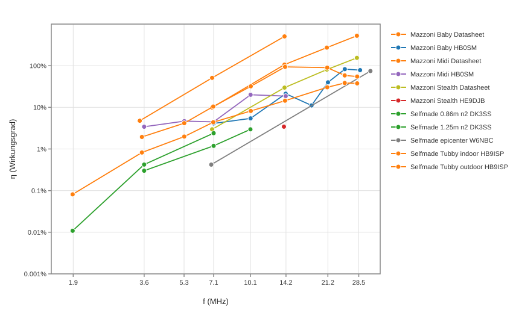

calculator
calculator

| Brand | Selfmade | Selfmade | |
|---|---|---|---|
| Name | Tubby indoor | Tubby outdoor | |
| Location | HB9ISP | HB9ISP | |
| Picture | | | |
| Links | description calculator | description calculator | |
| Loop diameter D | m | 1.014 | 1.014 |
| Conductor diameter d | m | 0.100 | 0.100 |
| Loop count n | 1 | 1 | 1 |
| Frequency f | MHz | 28.074 | 28.074 |
| Bandwidth BSWR=2.62 | kHz | 452.0 | 310.0 |
| Power into antenna P | W | 100 | 100 |
| Inductance L | H | 1.53e-06 | 1.53e-06 |
| Capacitance C | F | 2.11e-11 | 2.11e-11 |
| Unloaded Q0 | 1 | 62 | 91 |
| Damping resistance RT | Ohm | 4.335 | 2.973 |
| Radiation resistance RR | Ohm | 1.633 | 1.633 |
| Loss resistance RLoss | Ohm | 2.702 | 1.341 |
| swr_min | 1 | 1.00 | 1.00 |
| etaSWR_ant | % | 100 | 100 |
| Antenna efficiency η | % | 37.7 | 54.9 |
| Loop current I | A | 4.80 | 5.80 |
| Loop voltage Uloop | V | 1293 | 1562 |
| Magnetic dipole moment m | A m² | 3.878 | 4.683 |
| Brand | Selfmade | Selfmade | |
|---|---|---|---|
| Name | Tubby indoor | Tubby outdoor | |
| Location | HB9ISP | HB9ISP | |
| Picture | | | |
| Links | description calculator | description calculator | |
| Loop diameter D | m | 1.014 | 1.014 |
| Conductor diameter d | m | 0.100 | 0.100 |
| Loop count n | 1 | 1 | 1 |
| Frequency f | MHz | 24.915 | 24.915 |
| Bandwidth BSWR=2.62 | kHz | 272.0 | 179.0 |
| Power into antenna P | W | 100 | 100 |
| Inductance L | H | 1.53e-06 | 1.53e-06 |
| Capacitance C | F | 2.67e-11 | 2.67e-11 |
| Unloaded Q0 | 1 | 92 | 139 |
| Damping resistance RT | Ohm | 2.609 | 1.717 |
| Radiation resistance RR | Ohm | 1.004 | 1.004 |
| Loss resistance RLoss | Ohm | 1.605 | 0.713 |
| swr_min | 1 | 1.00 | 1.00 |
| etaSWR_ant | % | 100 | 100 |
| Antenna efficiency η | % | 38.5 | 58.5 |
| Loop current I | A | 6.19 | 7.63 |
| Loop voltage Uloop | V | 1479 | 1824 |
| Magnetic dipole moment m | A m² | 5.000 | 6.163 |
| Brand | Selfmade | Selfmade | |
|---|---|---|---|
| Name | Tubby indoor | Tubby outdoor | |
| Location | HB9ISP | HB9ISP | |
| Picture | | | |
| Links | description calculator | description calculator | |
| Loop diameter D | m | 1.014 | 1.014 |
| Conductor diameter d | m | 0.100 | 0.100 |
| Loop count n | 1 | 1 | 1 |
| Frequency f | MHz | 21.074 | 21.074 |
| Bandwidth BSWR=2.62 | kHz | 175.0 | 59.0 |
| Power into antenna P | W | 100 | 100 |
| Inductance L | H | 1.53e-06 | 1.53e-06 |
| Capacitance C | F | 3.74e-11 | 3.74e-11 |
| Unloaded Q0 | 1 | 120 | 357 |
| Damping resistance RT | Ohm | 1.678 | 0.566 |
| Radiation resistance RR | Ohm | 0.509 | 0.509 |
| Loss resistance RLoss | Ohm | 1.170 | 0.0571 |
| swr_min | 1 | 1.00 | 1.00 |
| etaSWR_ant | % | 100 | 100 |
| Antenna efficiency η | % | 30.3 | 89.9 |
| Loop current I | A | 7.72 | 13.29 |
| Loop voltage Uloop | V | 1560 | 2687 |
| Magnetic dipole moment m | A m² | 6.233 | 10.735 |
| Brand | Selfmade | Selfmade | |
|---|---|---|---|
| Name | Tubby indoor | Tubby outdoor | |
| Location | HB9ISP | HB9ISP | |
| Picture | | | |
| Links | description calculator | description calculator | |
| Loop diameter D | m | 1.014 | 1.014 |
| Conductor diameter d | m | 0.100 | 0.100 |
| Loop count n | 1 | 1 | 1 |
| Frequency f | MHz | 14.074 | 14.074 |
| Bandwidth BSWR=2.62 | kHz | 72.0 | 11.1 |
| Power into antenna P | W | 100 | 100 |
| Inductance L | H | 1.53e-06 | 1.53e-06 |
| Capacitance C | F | 8.38e-11 | 8.38e-11 |
| Unloaded Q0 | 1 | 195 | 1268 |
| Damping resistance RT | Ohm | 0.691 | 0.106 |
| Radiation resistance RR | Ohm | 0.0998 | 0.0998 |
| Loss resistance RLoss | Ohm | 0.591 | 0.00662 |
| swr_min | 1 | 1.00 | 1.00 |
| etaSWR_ant | % | 100 | 100 |
| Antenna efficiency η | % | 14.5 | 93.8 |
| Loop current I | A | 12.03 | 30.65 |
| Loop voltage Uloop | V | 1624 | 4137 |
| Magnetic dipole moment m | A m² | 9.718 | 24.750 |
| Brand | Selfmade | Selfmade | |
|---|---|---|---|
| Name | Tubby indoor | Tubby outdoor | |
| Location | HB9ISP | HB9ISP | |
| Picture | | | |
| Links | description calculator | description calculator | |
| Loop diameter D | m | 1.014 | 1.014 |
| Conductor diameter d | m | 0.100 | 0.100 |
| Loop count n | 1 | 1 | 1 |
| Frequency f | MHz | 10.136 | 10.136 |
| Bandwidth BSWR=2.62 | kHz | 34.0 | 8.7 |
| Power into antenna P | W | 100 | 100 |
| Inductance L | H | 1.53e-06 | 1.53e-06 |
| Capacitance C | F | 1.62e-10 | 1.62e-10 |
| Unloaded Q0 | 1 | 298 | 1165 |
| Damping resistance RT | Ohm | 0.326 | 0.0834 |
| Radiation resistance RR | Ohm | 0.0267 | 0.0267 |
| Loss resistance RLoss | Ohm | 0.299 | 0.0567 |
| swr_min | 1 | 1.00 | 1.00 |
| etaSWR_ant | % | 100 | 100 |
| Antenna efficiency η | % | 8.19 | 32.0 |
| Loop current I | A | 17.51 | 34.62 |
| Loop voltage Uloop | V | 1702 | 3365 |
| Magnetic dipole moment m | A m² | 14.141 | 27.956 |
| Brand | Selfmade | Selfmade | |
|---|---|---|---|
| Name | Tubby indoor | Tubby outdoor | |
| Location | HB9ISP | HB9ISP | |
| Picture | | | |
| Links | description calculator | description calculator | |
| Loop diameter D | m | 1.014 | 1.014 |
| Conductor diameter d | m | 0.100 | 0.100 |
| Loop count n | 1 | 1 | 1 |
| Frequency f | MHz | 7.074 | 7.074 |
| Bandwidth BSWR=2.62 | kHz | 15.0 | 6.3 |
| Power into antenna P | W | 100 | 100 |
| Inductance L | H | 1.53e-06 | 1.53e-06 |
| Capacitance C | F | 3.32e-10 | 3.32e-10 |
| Unloaded Q0 | 1 | 472 | 1123 |
| Damping resistance RT | Ohm | 0.144 | 0.0604 |
| Radiation resistance RR | Ohm | 0.00632 | 0.00632 |
| Loss resistance RLoss | Ohm | 0.138 | 0.0541 |
| swr_min | 1 | 1.00 | 1.00 |
| etaSWR_ant | % | 100 | 100 |
| Antenna efficiency η | % | 4.39 | 10.5 |
| Loop current I | A | 26.36 | 40.68 |
| Loop voltage Uloop | V | 1789 | 2760 |
| Magnetic dipole moment m | A m² | 21.290 | 32.852 |
| Brand | Selfmade | Selfmade | |
|---|---|---|---|
| Name | Tubby indoor | Tubby outdoor | |
| Location | HB9ISP | HB9ISP | |
| Picture | | | |
| Links | description calculator | description calculator | |
| Loop diameter D | m | 1.014 | 1.014 |
| Conductor diameter d | m | 0.100 | 0.100 |
| Loop count n | 1 | 1 | 1 |
| Frequency f | MHz | 5.357 | 5.357 |
| Bandwidth BSWR=2.62 | kHz | 10.9 | 5.2 |
| Power into antenna P | W | 100 | 100 |
| Inductance L | H | 1.53e-06 | 1.53e-06 |
| Capacitance C | F | 5.78e-10 | 5.78e-10 |
| Unloaded Q0 | 1 | 491 | 1030 |
| Damping resistance RT | Ohm | 0.105 | 0.0499 |
| Radiation resistance RR | Ohm | 0.00208 | 0.00208 |
| Loss resistance RLoss | Ohm | 0.102 | 0.0478 |
| swr_min | 1 | 1.00 | 1.00 |
| etaSWR_ant | % | 100 | 100 |
| Antenna efficiency η | % | 1.99 | 4.16 |
| Loop current I | A | 30.93 | 44.78 |
| Loop voltage Uloop | V | 1589 | 2301 |
| Magnetic dipole moment m | A m² | 24.976 | 36.160 |
| Brand | Selfmade | Selfmade | |
|---|---|---|---|
| Name | Tubby indoor | Tubby outdoor | |
| Location | HB9ISP | HB9ISP | |
| Picture | | | |
| Links | description calculator | description calculator | |
| Loop diameter D | m | 1.014 | 1.014 |
| Conductor diameter d | m | 0.100 | 0.100 |
| Loop count n | 1 | 1 | 1 |
| Frequency f | MHz | 3.573 | 3.573 |
| Bandwidth BSWR=2.62 | kHz | 5.2 | 2.2 |
| Power into antenna P | W | 100 | 100 |
| Inductance L | H | 1.53e-06 | 1.53e-06 |
| Capacitance C | F | 1.30e-09 | 1.30e-09 |
| Unloaded Q0 | 1 | 687 | 1624 |
| Damping resistance RT | Ohm | 0.0499 | 0.0211 |
| Radiation resistance RR | Ohm | 0.000410 | 0.000410 |
| Loss resistance RLoss | Ohm | 0.0495 | 0.0207 |
| swr_min | 1 | 1.00 | 1.00 |
| etaSWR_ant | % | 100 | 100 |
| Antenna efficiency η | % | 0.823 | 1.95 |
| Loop current I | A | 44.78 | 68.84 |
| Loop voltage Uloop | V | 1535 | 2359 |
| Magnetic dipole moment m | A m² | 36.160 | 55.593 |
| Brand | Selfmade | |
|---|---|---|
| Name | Tubby indoor | |
| Location | HB9ISP | |
| Picture | | |
| Links | description calculator | |
| Loop diameter D | m | 1.014 |
| Conductor diameter d | m | 0.100 |
| Loop count n | 1 | 1 |
| Frequency f | MHz | 1.840 |
| Bandwidth BSWR=2.62 | kHz | 3.7 |
| Power into antenna P | W | 100 |
| Inductance L | H | 1.53e-06 |
| Capacitance C | F | 4.90e-09 |
| Unloaded Q0 | 1 | 497 |
| Damping resistance RT | Ohm | 0.0355 |
| Radiation resistance RR | Ohm | 0.000029 |
| Loss resistance RLoss | Ohm | 0.0355 |
| swr_min | 1 | 1.00 |
| etaSWR_ant | % | 100 |
| Antenna efficiency η | % | 0.081 |
| Loop current I | A | 53.08 |
| Loop voltage Uloop | V | 937 |
| Magnetic dipole moment m | A m² | 42.868 |